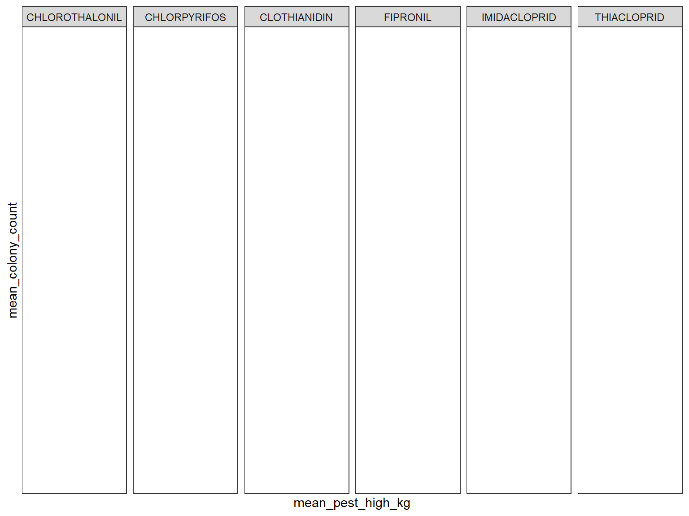

Data Processing
county_fips = read_csv("./data/all-geocodes-v2016.csv", skip = 4) %>%
janitor::clean_names() %>%
rename(county_name = area_name_including_legal_statistical_area_description) %>%
filter(county_code_fips != "000") %>%
mutate(state_county_fips = paste0(state_code_fips, county_code_fips)) %>%
select (state_code_fips, county_code_fips, state_county_fips, county_name)## Parsed with column specification:
## cols(
## `Summary Level` = col_character(),
## `State Code (FIPS)` = col_character(),
## `County Code (FIPS)` = col_character(),
## `County Subdivision Code (FIPS)` = col_character(),
## `Place Code (FIPS)` = col_character(),
## `Consolidtated City Code (FIPS)` = col_character(),
## `Area Name (including legal/statistical area description)` = col_character()
## )state_fips = read_csv("./data/state-geocodes-v2016.csv", skip = 5) %>%
janitor::clean_names() %>%
filter(state_fips != "00") %>%
select(state_fips, name) %>%
mutate(state_fips = as.numeric(state_fips)) %>%
rename(state = name)## Parsed with column specification:
## cols(
## Region = col_double(),
## Division = col_double(),
## `State (FIPS)` = col_character(),
## Name = col_character()
## )bee_county = read_csv("./data/bee_county/Bee_Colony_Census_Data_by_County 2.csv") %>%
janitor::clean_names() %>%
select(year,
state,
state_ansi,
ag_district,
ag_district_code,
county,
county_ansi,
value,
cv_percent) ## Parsed with column specification:
## cols(
## Year = col_double(),
## Period = col_character(),
## State = col_character(),
## `State ANSI` = col_double(),
## `Ag District` = col_character(),
## `Ag District Code` = col_double(),
## County = col_character(),
## `County ANSI` = col_double(),
## Value = col_character(),
## `CV (%)` = col_character()
## ) bee_county$state_ansi = stringr::str_pad(bee_county$state_ansi,2 , pad = "0")
bee_county$county_ansi = stringr::str_pad(bee_county$county_ansi,3 , pad = "0")
bee_county = bee_county%>%
mutate(state_county_fips = paste0(state_ansi, county_ansi),
value = replace(value, value == "(D)", "NA"),
cv_percent = replace(cv_percent, cv_percent == "(D)", "NA")) %>%
rename (colony_count = value)#create function to import data
file_name <- list.files(path = "./data/bee_state_2/")
df = read_csv(file = str_c("./data/bee_state_2/", file_name[1])) %>%
mutate(file = file_name[1])## Parsed with column specification:
## cols(
## `2` = col_double(),
## t = col_character(),
## `Honey: Released February 28, 2002, by the National Agricultural Statistics Service (NASS), Agricultural Statistics Board, U.S. Department of Agriculture.` = col_character(),
## X4 = col_character(),
## X5 = col_character(),
## X6 = col_character(),
## X7 = col_character(),
## X8 = col_character(),
## X9 = col_character()
## ) df## # A tibble: 51 x 10
## `2` t `Honey: Released … X4 X5 X6 X7 X8 X9 file
## <dbl> <chr> <chr> <chr> <chr> <chr> <chr> <chr> <chr> <chr>
## 1 2 t Honey: Number of… <NA> <NA> <NA> <NA> <NA> <NA> 2002…
## 2 2 t and Value by Stat… <NA> <NA> <NA> <NA> <NA> <NA> 2002…
## 3 2 h <NA> <NA> <NA> <NA> <NA> <NA> <NA> 2002…
## 4 2 h <NA> Honey Yield <NA> <NA> Aver… Value 2002…
## 5 2 h State Prod… per Prod… Stoc… Pric… of 2002…
## 6 2 h <NA> Colo… Colo… <NA> Dec … Poun… Prod… 2002…
## 7 2 h <NA> <NA> <NA> <NA> <NA> <NA> <NA> 2002…
## 8 2 u <NA> 1,000 Poun… 1,00… 1,00… Cents 1,00… 2002…
## 9 2 d AL 16 78 1248 187 59 736 2002…
## 10 2 d AZ 40 59 2360 1322 73 1723 2002…
## # … with 41 more rowsmy_read_csv = function(x){
df = read_csv(x, skip = 9, col_names = F)
}
bee_data =
tibble(
file_names = file_name,
path = str_c("./data/bee_state_2/", file_names)
) %>%
mutate(data = map(path, my_read_csv))%>%
unnest()## Parsed with column specification:
## cols(
## X1 = col_double(),
## X2 = col_character(),
## X3 = col_character(),
## X4 = col_double(),
## X5 = col_double(),
## X6 = col_double(),
## X7 = col_double(),
## X8 = col_double(),
## X9 = col_double()
## )## Parsed with column specification:
## cols(
## X1 = col_double(),
## X2 = col_character(),
## X3 = col_character(),
## X4 = col_double(),
## X5 = col_double(),
## X6 = col_double(),
## X7 = col_double(),
## X8 = col_double(),
## X9 = col_double()
## )
## Parsed with column specification:
## cols(
## X1 = col_double(),
## X2 = col_character(),
## X3 = col_character(),
## X4 = col_double(),
## X5 = col_double(),
## X6 = col_double(),
## X7 = col_double(),
## X8 = col_double(),
## X9 = col_double()
## )
## Parsed with column specification:
## cols(
## X1 = col_double(),
## X2 = col_character(),
## X3 = col_character(),
## X4 = col_double(),
## X5 = col_double(),
## X6 = col_double(),
## X7 = col_double(),
## X8 = col_double(),
## X9 = col_double()
## )
## Parsed with column specification:
## cols(
## X1 = col_double(),
## X2 = col_character(),
## X3 = col_character(),
## X4 = col_double(),
## X5 = col_double(),
## X6 = col_double(),
## X7 = col_double(),
## X8 = col_double(),
## X9 = col_double()
## )
## Parsed with column specification:
## cols(
## X1 = col_double(),
## X2 = col_character(),
## X3 = col_character(),
## X4 = col_double(),
## X5 = col_double(),
## X6 = col_double(),
## X7 = col_double(),
## X8 = col_double(),
## X9 = col_double()
## )
## Parsed with column specification:
## cols(
## X1 = col_double(),
## X2 = col_character(),
## X3 = col_character(),
## X4 = col_double(),
## X5 = col_double(),
## X6 = col_double(),
## X7 = col_double(),
## X8 = col_double(),
## X9 = col_double()
## )
## Parsed with column specification:
## cols(
## X1 = col_double(),
## X2 = col_character(),
## X3 = col_character(),
## X4 = col_double(),
## X5 = col_double(),
## X6 = col_double(),
## X7 = col_double(),
## X8 = col_double(),
## X9 = col_double()
## )
## Parsed with column specification:
## cols(
## X1 = col_double(),
## X2 = col_character(),
## X3 = col_character(),
## X4 = col_double(),
## X5 = col_double(),
## X6 = col_double(),
## X7 = col_double(),
## X8 = col_double(),
## X9 = col_double()
## )
## Parsed with column specification:
## cols(
## X1 = col_double(),
## X2 = col_character(),
## X3 = col_character(),
## X4 = col_double(),
## X5 = col_double(),
## X6 = col_double(),
## X7 = col_double(),
## X8 = col_double(),
## X9 = col_double()
## )
## Parsed with column specification:
## cols(
## X1 = col_double(),
## X2 = col_character(),
## X3 = col_character(),
## X4 = col_double(),
## X5 = col_double(),
## X6 = col_double(),
## X7 = col_double(),
## X8 = col_double(),
## X9 = col_double()
## )
## Parsed with column specification:
## cols(
## X1 = col_double(),
## X2 = col_character(),
## X3 = col_character(),
## X4 = col_double(),
## X5 = col_double(),
## X6 = col_double(),
## X7 = col_double(),
## X8 = col_double(),
## X9 = col_double()
## )
## Parsed with column specification:
## cols(
## X1 = col_double(),
## X2 = col_character(),
## X3 = col_character(),
## X4 = col_double(),
## X5 = col_double(),
## X6 = col_double(),
## X7 = col_double(),
## X8 = col_double(),
## X9 = col_double()
## )
## Parsed with column specification:
## cols(
## X1 = col_double(),
## X2 = col_character(),
## X3 = col_character(),
## X4 = col_double(),
## X5 = col_double(),
## X6 = col_double(),
## X7 = col_double(),
## X8 = col_double(),
## X9 = col_double()
## )
## Parsed with column specification:
## cols(
## X1 = col_double(),
## X2 = col_character(),
## X3 = col_character(),
## X4 = col_double(),
## X5 = col_double(),
## X6 = col_double(),
## X7 = col_double(),
## X8 = col_double(),
## X9 = col_double()
## )
## Parsed with column specification:
## cols(
## X1 = col_double(),
## X2 = col_character(),
## X3 = col_character(),
## X4 = col_double(),
## X5 = col_double(),
## X6 = col_double(),
## X7 = col_double(),
## X8 = col_double(),
## X9 = col_double()
## )
## Parsed with column specification:
## cols(
## X1 = col_double(),
## X2 = col_character(),
## X3 = col_character(),
## X4 = col_double(),
## X5 = col_double(),
## X6 = col_double(),
## X7 = col_double(),
## X8 = col_double(),
## X9 = col_double()
## )
## Parsed with column specification:
## cols(
## X1 = col_double(),
## X2 = col_character(),
## X3 = col_character(),
## X4 = col_double(),
## X5 = col_double(),
## X6 = col_double(),
## X7 = col_double(),
## X8 = col_double(),
## X9 = col_double()
## )#clean data set
clean_bee_data =
bee_data %>%
separate(file_names, into = c("year", "remove"), sep = ".c") %>%
select(-remove, -X1, -X2, -path) %>%
rename(state = X3, honey_producing_colonies = X4, yield_per_colony = X5, production = X6, stocks = X7, price_per_pound = X8, production_value = X9) %>%
drop_na(state) %>%
mutate(state = recode(state, AL = "Alabama", AR = "Arkansas", AZ = "Arizona", CA = "California", CO = "Colorado", FL = "Florida", GA = "Georgia", HI = "Hawaii", IA = "Iowa", IL = "Illinois", ID = "Idaho", IN = "Indiana", KS = "Kansas", KY = "Kentucky", LA = "Louisiana", ME = "Maine", MD = "Maryland", MI = "Michigan", MN = "Minnesota", MO = "Missouri", MT = "Montana", MS = "Mississippi", NC = "North Carolina", ND = "North Dakota", NE = "Nebraska", NJ = "New Jersey", NM = "New Mexico", NV = "Nevada", NY = "New York", OH = "Ohio", OK = "Oklahoma", OR = "Oregon", PA = "Pennsylvania", SC = "South Carolina", SD = "South Dakota", TN = "Tennessee", TX = "Texas", UT = "Utah", VA = "Virginia", VT = "Vermont", WA = "Washington", WV = "West Virginia", WI = "Wisconsin", WY = "Wyoming"))pest_2002 = read_excel("./data/pesticides_csv/EPest.county.estimates.2002.xlsx") %>%
janitor::clean_names() %>%
mutate(
state_fips = state_fips_code,
county_fips = county_fips_code,
state_county_fips = paste0(state_fips, county_fips),
epest_low_kg = round(epest_low_kg),
epest_high_kg = round(epest_high_kg)) %>%
select(-state_fips_code, -county_fips_code)
pest_2002 %>%
group_by(year, state_county_fips, compound) %>%
ggplot(aes(x = compound, y = epest_high_kg)) +
geom_col()
unique(pull(pest_2002, compound))state_bee_fips = full_join(clean_bee_data, state_fips, by = "state")
top_pesticides = read_csv("./data/top_pesticides.csv") %>%
mutate(state_fips = as.numeric(state_fips))## Parsed with column specification:
## cols(
## X1 = col_double(),
## compound = col_character(),
## year = col_double(),
## epest_low_kg = col_double(),
## epest_high_kg = col_double(),
## state_fips = col_character(),
## county_fips = col_character(),
## state_county_fips = col_character()
## )state_pest_data =
top_pesticides %>%
group_by(state_fips, year, compound) %>%
summarize(low = sum(epest_low_kg), high = sum(epest_high_kg)) state_bee_yrfips =
state_bee_fips %>%
mutate(state_year_fips = paste0(year, state_fips))
state_pest_yrfips =
state_pest_data %>%
mutate(state_year_fips = paste0(year, state_fips))
merged_state_data = full_join(state_bee_yrfips, state_pest_yrfips, by = "state_year_fips") %>%
select(year.x, state, state_fips.x, honey_producing_colonies, yield_per_colony, production, compound, low, high) %>%
rename(state_fips = state_fips.x) %>%
drop_na(year.x, state, compound, high)county_bee_yrfips =
bee_county %>%
mutate(county_year_fips = paste0(year, state_county_fips),
state_year_fips = paste0(year, state_ansi))
county_pest_yrfips =
top_pesticides %>%
mutate(state_county_fips = as.numeric(state_county_fips) ,
county_year_fips = paste0(year, state_county_fips)
)
merged_county_data = full_join(county_bee_yrfips, county_pest_yrfips, by = "county_year_fips") %>%
select(year.x, state, county, county_fips, colony_count, compound, epest_low_kg, epest_high_kg, state_year_fips) %>%
drop_na(year.x, state, county, colony_count, compound, epest_high_kg)pest_miss = read_csv("./data/top_pesticides.csv") %>%
group_by(compound) %>%
summarise(missing = sum(is.na(epest_high_kg))) ## Parsed with column specification:
## cols(
## X1 = col_double(),
## compound = col_character(),
## year = col_double(),
## epest_low_kg = col_double(),
## epest_high_kg = col_double(),
## state_fips = col_character(),
## county_fips = col_character(),
## state_county_fips = col_character()
## )pest_miss ## # A tibble: 6 x 2
## compound missing
## <chr> <int>
## 1 CHLOROTHALONIL 0
## 2 CHLORPYRIFOS 0
## 3 CLOTHIANIDIN 1
## 4 FIPRONIL 0
## 5 IMIDACLOPRID 4
## 6 THIACLOPRID 0#All of our pesticides meet the 90% cutoff for completeness. Imidacloprid has the most missing values (n=4) out of 34,000+ observations.
pest_zero = read_csv("./data/top_pesticides.csv") %>%
mutate(epest_high_kg = na_if(epest_high_kg, "0")) %>%
group_by(compound) %>%
summarise(missing = sum(is.na(epest_high_kg)))## Parsed with column specification:
## cols(
## X1 = col_double(),
## compound = col_character(),
## year = col_double(),
## epest_low_kg = col_double(),
## epest_high_kg = col_double(),
## state_fips = col_character(),
## county_fips = col_character(),
## state_county_fips = col_character()
## )pest_zero## # A tibble: 6 x 2
## compound missing
## <chr> <int>
## 1 CHLOROTHALONIL 1012
## 2 CHLORPYRIFOS 525
## 3 CLOTHIANIDIN 3468
## 4 FIPRONIL 1750
## 5 IMIDACLOPRID 2848
## 6 THIACLOPRID 1803#correlation of state level means across all years
corr_state = read_csv("./data/top_pesticides.csv") %>%
drop_na(epest_high_kg) %>%
group_by(compound, state_fips) %>%
summarise(mean_pest_high = mean(epest_high_kg, na.rm = TRUE)) %>%
pivot_wider(
names_from = "compound",
values_from = "mean_pest_high",
) %>%
select(-state_fips)## Parsed with column specification:
## cols(
## X1 = col_double(),
## compound = col_character(),
## year = col_double(),
## epest_low_kg = col_double(),
## epest_high_kg = col_double(),
## state_fips = col_character(),
## county_fips = col_character(),
## state_county_fips = col_character()
## )corr_state %>%
view()
matrix_state_1 = cor(corr_state, use = "everything", method = c("pearson"))
matrix_state_1## CHLOROTHALONIL CHLORPYRIFOS CLOTHIANIDIN FIPRONIL
## CHLOROTHALONIL 1.0000000 0.4802217 0.0571605 NA
## CHLORPYRIFOS 0.4802217 1.0000000 0.5316680 NA
## CLOTHIANIDIN 0.0571605 0.5316680 1.0000000 NA
## FIPRONIL NA NA NA 1
## IMIDACLOPRID 0.4953138 0.8741880 0.3934778 NA
## THIACLOPRID NA NA NA NA
## IMIDACLOPRID THIACLOPRID
## CHLOROTHALONIL 0.4953138 NA
## CHLORPYRIFOS 0.8741880 NA
## CLOTHIANIDIN 0.3934778 NA
## FIPRONIL NA NA
## IMIDACLOPRID 1.0000000 NA
## THIACLOPRID NA 1matrix_state_2 = cor(corr_state, use = "complete.obs", method = c("pearson"))
matrix_state_2## CHLOROTHALONIL CHLORPYRIFOS CLOTHIANIDIN FIPRONIL
## CHLOROTHALONIL 1.0000000 0.70246745 0.3117681 -0.122623772
## CHLORPYRIFOS 0.7024675 1.00000000 0.5756553 0.001349550
## CLOTHIANIDIN 0.3117681 0.57565529 1.0000000 0.506889870
## FIPRONIL -0.1226238 0.00134955 0.5068899 1.000000000
## IMIDACLOPRID 0.6541162 0.97497272 0.5498456 -0.003886203
## THIACLOPRID 0.1766534 0.12367034 -0.1679516 -0.056247127
## IMIDACLOPRID THIACLOPRID
## CHLOROTHALONIL 0.654116214 0.176653447
## CHLORPYRIFOS 0.974972715 0.123670345
## CLOTHIANIDIN 0.549845616 -0.167951571
## FIPRONIL -0.003886203 -0.056247127
## IMIDACLOPRID 1.000000000 -0.002073838
## THIACLOPRID -0.002073838 1.000000000pest_country_all = read_csv("./data/top_pesticides.csv") %>%
group_by(compound, year) %>%
summarise(mean_pest_high = mean(epest_high_kg, na.rm = TRUE)) %>%
ggplot(aes(x = year, y = mean_pest_high, color = compound)) +
geom_line() ## Parsed with column specification:
## cols(
## X1 = col_double(),
## compound = col_character(),
## year = col_double(),
## epest_low_kg = col_double(),
## epest_high_kg = col_double(),
## state_fips = col_character(),
## county_fips = col_character(),
## state_county_fips = col_character()
## )pest_country_all 
#After looking at the graph above, I decided to remove Imidacloprid and Thiacloprid
pest_country = read_csv("./data/top_pesticides.csv") %>%
filter(compound %in% c("CHLOROTHALONIL", "CHLORPYRIFOS",
"CLOTHIANIDIN", "FIPRONIL")) %>%
group_by(compound, year) %>%
summarise(mean_pest_high = mean(epest_high_kg, na.rm = TRUE)) %>%
ggplot(aes(x = year, y = mean_pest_high, color = compound)) +
geom_line() ## Parsed with column specification:
## cols(
## X1 = col_double(),
## compound = col_character(),
## year = col_double(),
## epest_low_kg = col_double(),
## epest_high_kg = col_double(),
## state_fips = col_character(),
## county_fips = col_character(),
## state_county_fips = col_character()
## )pest_country 
pest_state_2004 = read_csv("./data/top_pesticides.csv") %>%
filter(compound %in% c("CHLOROTHALONIL", "CHLORPYRIFOS",
"CLOTHIANIDIN", "FIPRONIL"), year == 2004) %>%
group_by(compound, state_fips) %>%
summarise(tot_pest_high = sum(epest_high_kg)) %>%
ggplot(aes(x = state_fips, y = tot_pest_high, color = compound)) +
geom_point() ## Parsed with column specification:
## cols(
## X1 = col_double(),
## compound = col_character(),
## year = col_double(),
## epest_low_kg = col_double(),
## epest_high_kg = col_double(),
## state_fips = col_character(),
## county_fips = col_character(),
## state_county_fips = col_character()
## )pest_state_2004
pest_state_1 = read_csv("./data/top_pesticides.csv") %>%
filter(compound == "CHLOROTHALONIL") %>%
group_by(year, state_fips) %>%
summarise(tot_pest_high = sum(epest_high_kg)) %>%
ggplot(aes(x = year, y = tot_pest_high, color =state_fips)) +
geom_line() +
labs(
title = "Chlorothalonil use across states in 2004",
x = "Year",
y = "Total Pesticide Use (Kg)")## Parsed with column specification:
## cols(
## X1 = col_double(),
## compound = col_character(),
## year = col_double(),
## epest_low_kg = col_double(),
## epest_high_kg = col_double(),
## state_fips = col_character(),
## county_fips = col_character(),
## state_county_fips = col_character()
## )pest_state_1
Looking at merged state data
summary(merged_state_data)## year.x state state_fips
## Length:2503 Length:2503 Min. : 1.00
## Class :character Class :character 1st Qu.:19.00
## Mode :character Mode :character Median :31.00
## Mean :31.09
## 3rd Qu.:46.00
## Max. :56.00
##
## honey_producing_colonies yield_per_colony production
## Min. : 2.00 Min. : 19.00 Min. : 84
## 1st Qu.: 9.00 1st Qu.: 45.00 1st Qu.: 459
## Median : 27.00 Median : 56.00 Median : 1550
## Mean : 61.15 Mean : 57.93 Mean : 3906
## 3rd Qu.: 65.00 3rd Qu.: 68.00 3rd Qu.: 3780
## Max. :510.00 Max. :124.00 Max. :46410
##
## compound low high
## Length:2503 Min. : 0.0 Min. : 0
## Class :character 1st Qu.: 742.8 1st Qu.: 1158
## Mode :character Median : 8517.0 Median : 8213
## Mean : 62555.0 Mean : 52131
## 3rd Qu.: 48834.5 3rd Qu.: 45540
## Max. :1466223.0 Max. :1468227
## NA's :1435merged_state_data %>%
group_by(compound, year.x) %>%
summarize(mean_colony_count = mean(honey_producing_colonies),
mean_pest_high_kg = mean(high)) %>%
select(year.x, compound, mean_colony_count, mean_pest_high_kg) %>%
knitr::kable(digits=2)| year.x | compound | mean_colony_count | mean_pest_high_kg |
|---|---|---|---|
| 2004 | CHLOROTHALONIL | 59.49 | 88468.95 |
| 2005 | CHLOROTHALONIL | 60.09 | 99930.16 |
| 2006 | CHLOROTHALONIL | 63.25 | 106147.10 |
| 2007 | CHLOROTHALONIL | 59.62 | 127448.55 |
| 2008 | CHLOROTHALONIL | 59.12 | 106846.62 |
| 2009 | CHLOROTHALONIL | 60.45 | 104185.02 |
| 2010 | CHLOROTHALONIL | 57.90 | 122511.48 |
| 2011 | CHLOROTHALONIL | 63.13 | 116520.49 |
| 2012 | CHLOROTHALONIL | 68.10 | 126408.97 |
| 2013 | CHLOROTHALONIL | 63.00 | 115444.08 |
| 2014 | CHLOROTHALONIL | 64.08 | 119310.95 |
| 2015 | CHLOROTHALONIL | 68.26 | 141246.00 |
| 2016 | CHLOROTHALONIL | 69.08 | 130352.00 |
| 2004 | CHLORPYRIFOS | 59.49 | 104549.44 |
| 2005 | CHLORPYRIFOS | 60.09 | 103115.07 |
| 2006 | CHLORPYRIFOS | 63.25 | 105032.98 |
| 2007 | CHLORPYRIFOS | 59.62 | 101325.95 |
| 2008 | CHLORPYRIFOS | 59.12 | 146560.23 |
| 2009 | CHLORPYRIFOS | 60.45 | 102064.55 |
| 2010 | CHLORPYRIFOS | 57.90 | 87879.27 |
| 2011 | CHLORPYRIFOS | 63.13 | 83918.82 |
| 2012 | CHLORPYRIFOS | 68.10 | 109464.28 |
| 2013 | CHLORPYRIFOS | 63.00 | 112382.59 |
| 2014 | CHLORPYRIFOS | 64.08 | 116213.77 |
| 2015 | CHLORPYRIFOS | 68.26 | 106157.76 |
| 2016 | CHLORPYRIFOS | 69.08 | 87361.72 |
| 2004 | CLOTHIANIDIN | 46.42 | 4884.40 |
| 2005 | CLOTHIANIDIN | 51.52 | 7813.73 |
| 2006 | CLOTHIANIDIN | 56.13 | 7080.89 |
| 2007 | CLOTHIANIDIN | 60.95 | 10152.82 |
| 2008 | CLOTHIANIDIN | 59.87 | 12918.87 |
| 2009 | CLOTHIANIDIN | 60.45 | 14183.10 |
| 2010 | CLOTHIANIDIN | 58.67 | 11911.69 |
| 2011 | CLOTHIANIDIN | 63.13 | 21198.54 |
| 2012 | CLOTHIANIDIN | 68.10 | 32759.74 |
| 2013 | CLOTHIANIDIN | 63.00 | 39837.10 |
| 2014 | CLOTHIANIDIN | 64.08 | 44439.77 |
| 2015 | CLOTHIANIDIN | 64.10 | 5273.45 |
| 2016 | CLOTHIANIDIN | 67.82 | 2581.46 |
| 2004 | FIPRONIL | 51.00 | 5045.10 |
| 2005 | FIPRONIL | 61.71 | 6735.04 |
| 2006 | FIPRONIL | 68.71 | 2979.76 |
| 2007 | FIPRONIL | 66.84 | 4034.74 |
| 2008 | FIPRONIL | 65.20 | 2013.84 |
| 2009 | FIPRONIL | 65.21 | 3165.43 |
| 2010 | FIPRONIL | 70.33 | 2247.27 |
| 2011 | FIPRONIL | 94.67 | 1819.29 |
| 2012 | FIPRONIL | 75.79 | 523.21 |
| 2013 | FIPRONIL | 53.93 | 326.33 |
| 2014 | FIPRONIL | 83.79 | 495.57 |
| 2015 | FIPRONIL | 84.69 | 279.69 |
| 2016 | FIPRONIL | 87.31 | 247.31 |
| 2004 | IMIDACLOPRID | 59.49 | 6295.58 |
| 2005 | IMIDACLOPRID | 61.43 | 5119.00 |
| 2006 | IMIDACLOPRID | 63.25 | 5452.25 |
| 2007 | IMIDACLOPRID | 59.62 | 8308.92 |
| 2008 | IMIDACLOPRID | 59.03 | 7942.79 |
| 2009 | IMIDACLOPRID | 61.82 | 9847.33 |
| 2010 | IMIDACLOPRID | 57.90 | 18865.38 |
| 2011 | IMIDACLOPRID | 63.13 | 20565.23 |
| 2012 | IMIDACLOPRID | 68.10 | 21167.00 |
| 2013 | IMIDACLOPRID | 63.00 | 23691.23 |
| 2014 | IMIDACLOPRID | 64.08 | 25955.82 |
| 2015 | IMIDACLOPRID | 68.26 | 11658.32 |
| 2016 | IMIDACLOPRID | 69.08 | 11433.49 |
| 2004 | THIACLOPRID | 29.47 | 296.12 |
| 2005 | THIACLOPRID | 28.47 | 422.65 |
| 2006 | THIACLOPRID | 47.89 | 471.26 |
| 2007 | THIACLOPRID | 51.75 | 385.06 |
| 2008 | THIACLOPRID | 60.36 | 382.57 |
| 2009 | THIACLOPRID | 30.73 | 590.93 |
| 2010 | THIACLOPRID | 30.93 | 597.80 |
| 2011 | THIACLOPRID | 32.13 | 529.07 |
| 2012 | THIACLOPRID | 57.12 | 324.81 |
| 2013 | THIACLOPRID | 30.86 | 776.57 |
| 2014 | THIACLOPRID | 30.50 | 661.21 |
| 2015 | THIACLOPRID | 32.77 | 335.38 |
| 2016 | THIACLOPRID | 45.60 | 699.00 |
merged_state_data %>%
group_by(compound, year.x) %>%
summarize(mean_colony_count = mean(honey_producing_colonies),
mean_pest_high_kg = mean(high)) %>%
ggplot(aes(x = mean_pest_high_kg, y = mean_colony_count, color = year.x)) + geom_smooth() + facet_grid(~compound)## `geom_smooth()` using method = 'loess' and formula 'y ~ x'
Looking at merged county data #there appear to be problems with the colony count data, it is missing
summary(merged_county_data)## year.x state county county_fips
## Min. :2007 Length:20742 Length:20742 Length:20742
## 1st Qu.:2007 Class :character Class :character Class :character
## Median :2007 Mode :character Mode :character Mode :character
## Mean :2009
## 3rd Qu.:2012
## Max. :2012
##
## colony_count compound epest_low_kg
## Length:20742 Length:20742 Min. : 0.0
## Class :character Class :character 1st Qu.: 7.0
## Mode :character Mode :character Median : 51.0
## Mean : 724.1
## 3rd Qu.: 354.0
## Max. :160848.0
## NA's :2930
## epest_high_kg state_year_fips
## Min. : 0.0 Length:20742
## 1st Qu.: 9.0 Class :character
## Median : 70.0 Mode :character
## Mean : 802.1
## 3rd Qu.: 482.0
## Max. :160846.0
## merged_county_data %>%
mutate(colony_count = as.numeric(colony_count)) %>%
group_by(compound, year.x) %>%
summarize(mean_colony_count = mean(colony_count),
mean_pest_high_kg = mean(epest_high_kg)) %>%
select(year.x, compound, mean_colony_count, mean_pest_high_kg) %>%
knitr::kable(digits=2)| year.x | compound | mean_colony_count | mean_pest_high_kg |
|---|---|---|---|
| 2007 | CHLOROTHALONIL | NA | 1929.81 |
| 2012 | CHLOROTHALONIL | NA | 1694.32 |
| 2007 | CHLORPYRIFOS | NA | 1237.60 |
| 2012 | CHLORPYRIFOS | NA | 1391.69 |
| 2007 | CLOTHIANIDIN | NA | 162.45 |
| 2012 | CLOTHIANIDIN | NA | 497.33 |
| 2007 | FIPRONIL | NA | 56.50 |
| 2012 | FIPRONIL | NA | 28.07 |
| 2007 | IMIDACLOPRID | NA | 79.59 |
| 2012 | IMIDACLOPRID | NA | 262.99 |
| 2007 | THIACLOPRID | NA | 12.33 |
| 2012 | THIACLOPRID | NA | 11.66 |